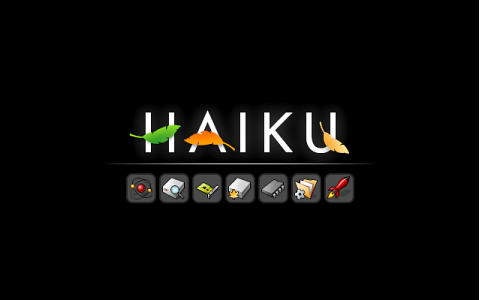

Moduł rozruchu
Opcje modułu rozruchu Haiku mogą być pomocne jeśli doświadczasz problemów sprzętowych lub chcesz wybrać konkretną instalację Haiku do uruchomienia, w przypadku gdy masz ich więcej (np. na płycie CD lub dysku USB). Przydają się również w przypadku problemów z oprogramowaniem, uniemożliwiających poprawny rozruch systemu. Zobacz sekcję Rozwiązywanie problemów poniżej.
Aby wyświetlić menu wyboru opcji modułu rozruchu, należy wcisnąć i przytrzymać klawisz SHIFT przed rozpoczęciem procesu uruchamiania systemu. Jeżeli jest zainstalowane menu rozruchowe, można przytrzymać SHIFT tuż przed zatwierdzeniem systemu do uruchomienia. W przypadku gdy Haiku jest jedynym systemem operacyjnym zainstalowanym na komputerze, SHIFT może być wciśnięty już w momencie wyświetlania komunikatów BIOS-u.
 Opcje modułu rozruchu
Opcje modułu rozruchu
Moduł rozruchu oferuje cztery menu:
| Select boot volume | Pozwala wybrać instalację Haiku do uruchomienia (więcej w sekcji Rozwiązywanie problemów poniżej). | |
| Select safe mode options | Oferuje kilka opcji do wypróbowania w przypadku problemów ze sprzętem, niestabilności systemu lub niedziałającego oprogramowania. Przy podświetlaniu poszczególnych opcji, na dole ekranu pojawia się krótkie wyjaśnienie ich działania. | |
|
| ||
| Select debug options | Tutaj znajdują się opcje pomocne przy badaniu problemów oraz pozyskiwaniu informacji do zgłoszenia błędu. Tak jak w przypadku menu opisanego wyżej, krótkie wyjaśnienie każdej opcji pojawia się na dole ekranu. | |
|
| ||
| Jeżeli opcja jest aktywna, miękki restart po wystąpieniu awarii wyświetla dodatkowo poniższe opcje: | ||
|
| ||
| Select screen resolution | Pozwala wymusić określoną rozdzielczość i głębię kolorów. |
Rozwiązywanie problemów
Jeżeli Haiku nie uruchamia się na Twoim sprzęcie od razu, wypróbuj różne opcje z menu . W każdym wypadku rozważ wypełnienie zgłoszenia o błędzie.
Z drugiej strony, w przypadku gdy Haiku odmawia posłuszeństwa po zainstalowaniu jakiegoś oprogramowania, zwłaszcza sterowników, jest kilka możliwości przywrócenia systemu do działania, aby było możliwe usunięcie problemowego pakietu:
Aktywowanie zapobiegnie uruchomienie większości serwerów, usług i skryptu UserBootscript.
Aktywowanie zapobiegnie ładowaniu jakichkolwiek rozszerzeń (sterowników, translatorów, itd.) zainstalowanych w hierarchii katalogu domowego.
If activating solves your troubles by falling back to VESA graphics, you can make the setting permanent by removing the # of the line #fail_safe_video_mode true in the text file /boot/home/config/settings/kernel/drivers/kernel.
Jeżeli problematyczny sterownik, rozszerzenie, itd. są zainstalowane w hierarchii katalogu systemowego, sprawa się komplikuje, ponieważ ten obszar systemu plików jest tylko do odczytu. W tym miejscu do gry wkracza opcja . Przy jej pomocy możesz poruszać się po katalogu systemowym i wyłączyć komponent odpowiedzialny za problemy klawiszami SPACE lub RETURN. ESC cofa do katalogu wyżej.
W sieci dostępny jest artykuł How to Permanently Blacklist a Package File (ang.) wyjaśniający jak zachować to ustawienie.
Under you can specify what former "version" of Haiku to boot. Every time you un/install a package, the old state is saved and you can boot into it by choosing it from the list presented in the boot loader options.
So, if you encounter boot problems after installing some package, boot a Haiku state from before that time and uninstall the offending package.
Rozruch Haiku
Po aktywowaniu pożądanych opcji, należy wrócić do głównego menu i kontynuować rozruch (). Wyświetli się wtedy taki ekran:
Jeżeli wszystko jest w porządku, symbole będą szybko zapalać się jeden po drugim.
Każdy z symboli mniej więcej odpowiada poniższym etapom rozruchu:
| Atom | Inicjalizacja modułów. | |
| Dysk + lupa | Tworzenie korzenia systemu plików (/) i montowanie devfs (/dev). | |
| Karta rozszerzeń | Inicjalizacja menedżera urządzeń. | |
| Dysk rozruchowy | Montowanie dysku rozruchowego. | |
| Mikroprocesor | Ładowanie modułów obsługi procesora. | |
| Katalog | Końcowa inicjalizacja podsystemów. | |
| Rakieta | Launch_daemon uruchomił system. |